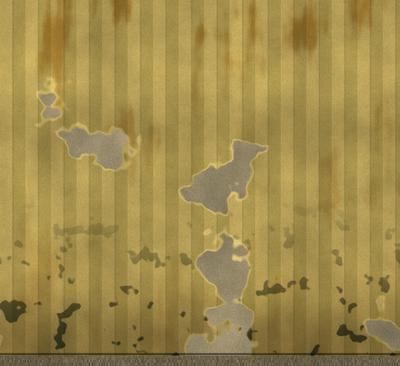
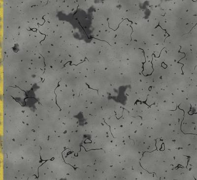
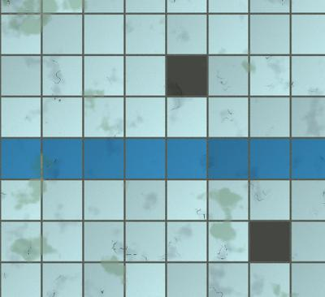
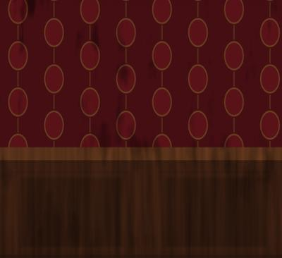
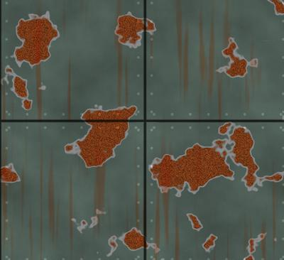
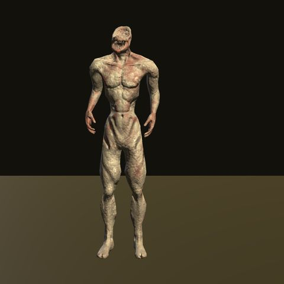
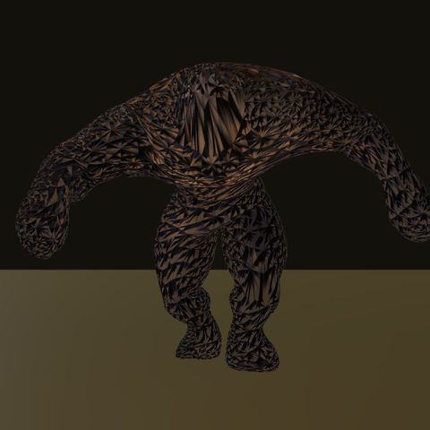
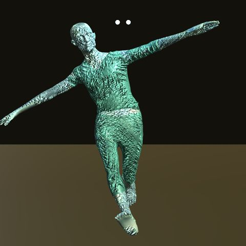
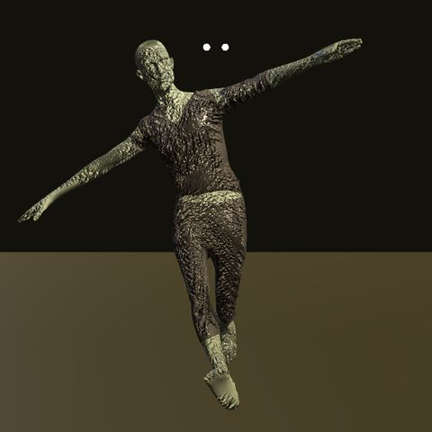
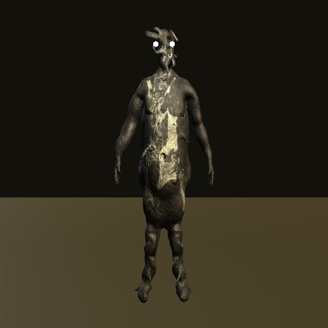

CINTA 01 Terror indie en primera persona · Windows PC
BACKROOMS: ESCAPA
Has atravesado la pared equivocada. Zumbido de fluorescentes, moqueta húmeda y kilómetros de pasillos amarillos. Algo te sigue. Encuentra la salida.
Build temprana v6.5.0 (multijugador por Internet) · Windows 64 bits · ≈ 46 MB (zip). Código y versiones (se abre en una pestaña nueva)
- 5 niveles
- 5 criaturas
- 1 salida oculta por nivel
- 2-4 jugadores en cooperativo (prueba temprana)
- Hecho con Unity
// 01
Tráiler y gameplay
SIN SEÑAL
Tráiler en preparación
Aquí irá el tráiler o un vídeo de gameplay cuando esté disponible.
// 02
Niveles
Cinco niveles encadenados, cada uno con su estética, su iluminación, su niebla y su propia criatura. Cada nivel empieza con un descenso en ascensor. La puerta de salida no tiene cartel ni flecha: solo la encontrarás explorando.
-

NIVEL 0
Oficinas amarillas
El clásico: papel pintado amarillento y húmedo, moqueta marrón, techo de placas y fluorescentes que parpadean. Un laberinto de pasillos con salas abiertas.
-

NIVEL 1
Aparcamiento
Hormigón gris, manchas de aceite y pilares. Un espacio abierto, de techo alto y muy oscuro, con tubos fluorescentes muy separados y a menudo muertos.
-

NIVEL 2
Poolrooms
Una piscina interminable de azulejos blancos y agua estancada hasta los tobillos. Luz azulada, pasos que chapotean, olas, reflejos y un avance más lento mientras algo se mueve bajo la superficie.
-

NIVEL 3
Hotel abandonado
Pasillos estrechos, moqueta roja y papel damasco. Solo quedan lámparas de pared casi muertas y una niebla densa: la linterna es imprescindible.
-

NIVEL 4
Complejo industrial
Chapa oxidada con remaches, suelo de chapa lagrimada, tuberías y luces de emergencia rojas que pulsan. El último tramo antes de salir… si sales.
// 03
Monstruos
Una criatura distinta en cada nivel. Patrullan, te oyen correr, te ven si llevas la linterna encendida y, cuando te pierden, te buscan.
-

Nivel 0 · Oficinas amarillas El Alto Pálido, ceniciento y estirado más allá de lo humano. Recorre las oficinas sin prisa… hasta que te ve. -

Nivel 1 · Aparcamiento El Coloso Una mole oscura que domina los espacios abiertos del aparcamiento y alcanza a verte desde muy lejos. -

Nivel 2 · Poolrooms El Ahogado Empapado, de ojos fríos y con un lamento que resuena entre los azulejos de los Poolrooms. -

Nivel 3 · Hotel abandonado El Huésped Nunca hizo el check-out. Son dos, ven peor a oscuras y escuchan cada paso sobre la moqueta. -

Nivel 4 · Complejo industrial El Hollín Negro, grasiento y tembloroso. Dos ejemplares, más rápidos que cualquier otra criatura.
// 04
Características
-
Salida oculta
Cada nivel esconde una puerta discreta en una de sus zonas más alejadas. Sin carteles, sin flechas, sin indicador de distancia.
-
Texturas procedurales, niebla y fluorescentes
Paredes, suelos y techos generados por código, niebla de color distinta en cada nivel y tubos fluorescentes que zumban y parpadean.
-
Agua realista
Olas, reflejos, espuma y cáusticas; vadeo con chapoteos, restos flotantes y gotas en la lente.
-
Cámara VHS found-footage
Activa el modo VHS con V: indicador REC, timecode, scanlines, aberración de color y glitches que empeoran cuando algo se acerca.
-
Cuerpo completo con traje hazmat
Mira hacia abajo y verás tu traje amarillo, tus botas y tu mano sujetando la linterna. El traje se empapa al entrar en el agua.
-
Inventario
Pilas para la linterna, agua de almendras para recuperar resistencia y cordura, barras luminosas para marcar el camino y notas por descubrir.
-
Intro found footage y audio más suave
Al abrir el juego, una intro de unos 9 s estilo cinta VHS (se salta con cualquier tecla pasados 2 s) y un sonido ambiente solo tonal, sin «soplo de aire», con opción para quitar el siseo VHS.
-
Descenso en ascensor
Cada nivel empieza dentro de un ascensor que cae a toda velocidad unos 8 s: sacudidas, contador de planta, frenazo, «ding» y puertas que se abren al nivel. Es obligatorio (solo se puede saltar tras morir y reiniciar el nivel) y en multijugador todos bajan juntos en la misma cabina.
-
Multijugador cooperativo Prueba temprana
De 2 a 4 jugadores. Aloja con un código de sala y tus amigos se unen con él: sin abrir puertos, con el servidor oficial incluido. También por IP y puerto TCP 7777 (con UPnP automático) o por VPN. Reanimación, monstruos y objetos sincronizados y chat con Enter. Cómo jugar →
-
Menú de inicio y pausa
Menú principal con selección de nivel, opciones y créditos; pausa con Esc. Volumen, sensibilidad, calidad, head-bob, intensidad del VHS y más.
-
Susto de muerte… o «susto suave»
Si te atrapan, la cámara se clava en su cara: grito, sacudida y pérdida de señal. La opción «Susto suave» reduce volumen, destellos, sacudida y glitch.
La pantalla que no quieres ver
Corte a negro, estática y «SIGNAL LOST». En esta web no hay sustos: esta pantalla es solo una recreación estática del estilo del juego.
- Pilas
- Agua de almendras
- Barras luminosas
- Notas
// 05
Multijugador cooperativo Prueba temprana
Escapad juntos de las Backrooms: de 2 a 4 jugadores. El modo de un jugador no cambia.
Aviso: probado en local y con un servidor intermedio real; las pruebas con amigos por Internet están pendientes. Es una prueba temprana: puede haber fallos de conexión o de sincronización, y la apertura automática de puertos (UPnP) solo se ha probado con routers simulados.
Cómo jugar con amigos
Opción A · Con código (recomendada: sin abrir puertos, funciona incluso con CGNAT)
- Misma versión. Todos necesitáis la v6.4 o la v6.5 (protocolo MP-2); las versiones anteriores (v6.3 y anteriores) no pueden unirse. Lo más seguro es que todos uséis la misma versión.
- Anfitrión: menú principal → Multijugador → escribe tu nombre → Alojar con código. La sala muestra un código de 6 caracteres: pásaselo a tus amigos.
- Clientes: Multijugador → nombre → Unirse con código → escribe el código. Entraréis en la sala de espera.
- El anfitrión elige el nivel con ◄ ► y pulsa Empezar. No se puede entrar en una partida ya empezada.
El juego incluye el servidor oficial (servidor intermedio que empareja a los jugadores por el código y reenvía los datos), así que no hay que configurar nada. Su dirección va ofuscada dentro del juego. Puede dejar de estar disponible o cambiar en futuras versiones. Si prefieres el tuyo, el código del servidor (se abre en una pestaña nueva) está en el repositorio.
Opción B · IP y puerto (TCP 7777)
- Anfitrión: Alojar partida → puerto
7777→ Crear sala. El juego intenta abrir el puerto automáticamente (UPnP) y muestra tu IP local y tu IP pública, con un botón para copiar la dirección. - Si el puerto no se abre solo, redirige el puerto TCP 7777 en tu router hacia tu PC. La primera vez, Windows pedirá permitir el juego en el Firewall: acepta.
- Clientes: Unirse → IP y puerto del anfitrión (admite
ip:puertopegado) → Conectar.
Alternativa (VPN): usad una VPN como Radmin VPN, ZeroTier o Hamachi: todos entráis en la misma red virtual y el anfitrión comparte la IP que le da la VPN.
Qué incluye
- Sala de espera con la lista de jugadores y selección de nivel por el anfitrión.
- Juego por Internet con código de sala (servidor intermedio oficial integrado) o por IP y puerto con UPnP.
- Avatares con el traje hazmat, linterna y nombre sobre la cabeza.
- Monstruos y objetos sincronizados: el primero en llegar se lleva la pila.
- Reanimación: si te derriban, un compañero que se quede a tu lado unos 4 s te levanta.
- Chat de texto con Enter (Esc cancela). En multijugador la pausa no detiene la partida.
- El nivel termina cuando todos los jugadores vivos llegan a la salida. Con 3-4 jugadores aparece un monstruo extra a partir del nivel 3.
-
Sala de espera · vista previa de desarrollo
-
En partida · vista previa de desarrollo (compañeros simulados)
// 06
Controles
Teclado y ratón.
- WASD
- Moverse
- Ratón
- Mirar
- Shift
- Correr
- Ctrl/C
- Agacharse
- F
- Linterna
- I
- Inventario
- V
- Modo cámara VHS
- Esc
- Pausa
- Enter
- Chat (solo multijugador)
- R
- Reiniciar nivel
- Espacio/E
- Saltar el ascensor (solo tras morir y reiniciar)
// 07
Capturas
Renders y capturas de previsualización del desarrollo (modelos, traje del jugador, ascensor, intro y texturas). No son el aspecto final con niebla e iluminación del juego.
-
Intro · título · vista previa de desarrollo
-
Ascensor · descenso · vista previa de desarrollo
-
Ascensor · llegada al nivel · vista previa de desarrollo
-
Texturas procedurales
-
Traje hazmat · vista exterior
-
Primera persona · linterna en mano
-
Primera persona · cuerpo visible
// 08
Créditos
Mallas del nivel, texturas, audio, shader VHS e interfaz son procedurales / código del proyecto (sin assets externos). Los modelos de monstruos, el traje del jugador y la cabina del ascensor son CC0 (dominio público); se acreditan por cortesía y trazabilidad.
Modelos de monstruos CC0 / dominio público
| Nivel | Nombre | Modelo (Id) | Autor | Licencia | Fuente |
|---|---|---|---|---|---|
| 0 Oficinas | El Alto | HorrorStalker | HorrorGameMaker.com (City Building Game Art) | CC0 (dominio público) | OpenGameArt (se abre en una pestaña nueva) |
| 1 Aparcamiento | El Coloso | GiantMutant | Eldritch Grim | CC0 (dominio público) | OpenGameArt (se abre en una pestaña nueva) |
| 2 Poolrooms | El Ahogado | DrownedZombie | Rikindle3D (modelo del Huésped, reteñido) | CC0 (dominio público) | OpenGameArt (se abre en una pestaña nueva) |
| 3 Hotel | El Huésped | CityZombie | Rikindle3D | CC0 (dominio público) | OpenGameArt (se abre en una pestaña nueva) |
| 4 Industrial | El Hollín | SootHorror | EmoPreben | CC0 (dominio público) | OpenGameArt (se abre en una pestaña nueva) |
Los modelos originales se convirtieron a FBX con Blender (decimado / renombrado de animaciones donde se indica) y se retexturizaron o tintaron en Unity. Los ojos brillantes, sonidos (gruñidos, pasos), temblor y efectos de terror son procedurales.
Modificaciones de cada modelo
- HorrorStalker (El Alto): retextura pálida/ceniza, estirado en altura; ojos y sonidos procedurales.
- GiantMutant (El Coloso): malla reducida (decimado ~30 %), oscurecida; ojos y sonidos procedurales.
- CityZombie (El Huésped): texturas desaturadas y reteñidas (gris verdoso) con Pillow; animaciones reasignadas al esqueleto con Blender; ojos y sonidos procedurales.
- DrownedZombie (El Ahogado): mismo modelo de Rikindle3D que el Huésped, con textura reteñida azul verdosa y empapada, ojos fríos y lamento de ahogado procedural.
- SootHorror (El Hollín): malla decimada (~45 %) y estirada/encorvada; textura reteñida a negro hollín grasiento; animaciones de zombi (Mixamo) reasignadas con Blender; ojos pálidos, temblor y sonidos procedurales. Licencia CC0 comprobada en la página del autor el 11-oct-2026.
Ascensor de entrada (todos los niveles) CC0 / dominio público
| Parte | Nombre | Autor | Licencia | Fuente |
|---|---|---|---|---|
| Cabina (suelo, paredes, pasamanos, botones, techo) | «Elevator car interior» (Backrooms and Liminal Spaces Kit) | 3D Assets | CC0 1.0 (dominio público) | 3dassets.dev (se abre en una pestaña nueva) |
| Puertas (dos hojas + dintel) | «Elevator door pair» (Backrooms and Liminal Spaces Kit) | 3D Assets | CC0 1.0 (dominio público) | 3dassets.dev (se abre en una pestaña nueva) |
Licencia comprobada el 11-oct-2026 en las páginas del recurso (CC0 1.0, no exige atribución; se cita igualmente). Transparencia: la página indica que el colaborador declara haber usado IA para generar estos modelos; se publican igualmente bajo CC0. Cambios: unidos en un solo FBX con Blender, texturas reducidas, cabina ensanchada un 30 % para cuatro jugadores. El indicador de planta, las luces, el sonido y la animación de las puertas son procedurales.
Cuerpo del jugador (traje hazmat)
| Modelo (Id) | Nombre | Autor | Licencia | Fuente |
|---|---|---|---|---|
PlayerHazmat | «Character Hazmat» | Quaternius | CC0 1.0 (dominio público) | Poly Pizza (se abre en una pestaña nueva) · quaternius.com (se abre en una pestaña nueva) |
Licencia comprobada el 11-oct-2026 en la página de Poly Pizza («Licence: CC0 1.0», «Public Domain (CC0)»). Cambios: GLB convertido a FBX con Blender; eliminadas las armas y el resto de objetos; conservadas las animaciones Idle, Walk, Run y Duck; color del traje cambiado a amarillo hazmat con guantes/botas negros (materiales de Unity). La linterna de mano, el IK del brazo, las sombras y el efecto de empapado son procedurales.
Nivel 2 «Poolrooms»
Nivel totalmente procedural (azulejos, agua con shader propio, luces): no usa modelos externos.
Herramientas
- Unity 2022.3 LTS
- Blender (conversión de modelos)
- Python/Pillow (retexturizado de los zombis y del Hollín)
// 09
Descarga
Windows PC · 64 bits
Descargar para Windowsv6.5.0 · ZIP de ≈ 46 MB (aprox.). Descomprime y ejecuta BackroomsEscape.exe.
Aviso de Windows SmartScreen: el ejecutable no está firmado digitalmente, por lo que Windows puede mostrar «Windows protegió su PC». Pulsa Más información → Ejecutar de todas formas si confías en la descarga. Es una build temprana.
Código y versiones (se abre en una pestaña nueva) · Repositorio en GitHub (se abre en una pestaña nueva)
Requisitos del sistema Estimados · por confirmar
Valores provisionales: todavía no se han probado en distintos equipos. Se publicarán cuando haya pruebas.
| Componente | Mínimos | Recomendados |
|---|---|---|
| Sistema operativo | Windows de 64 bits (estimado) | Windows 10/11 de 64 bits (estimado) |
| Procesador | Por determinar | Por determinar |
| Memoria | Por determinar | Por determinar |
| Gráficos | Por determinar | Por determinar |
| Almacenamiento | ≈ 46 MB comprimido / ≈ 103 MB descomprimido (aproximado; puede cambiar) | |